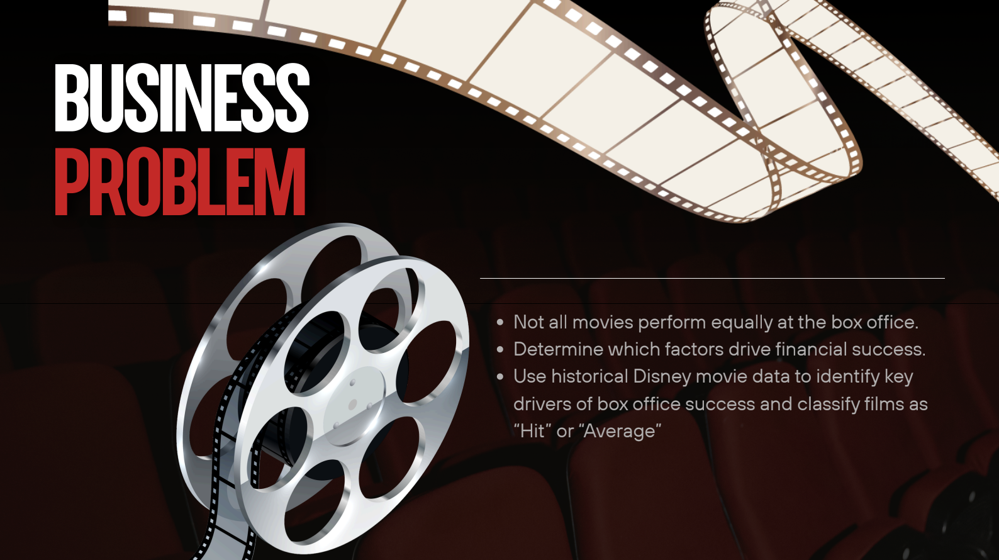
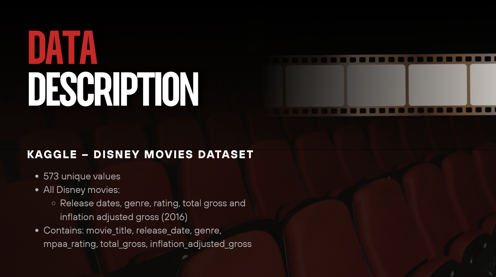
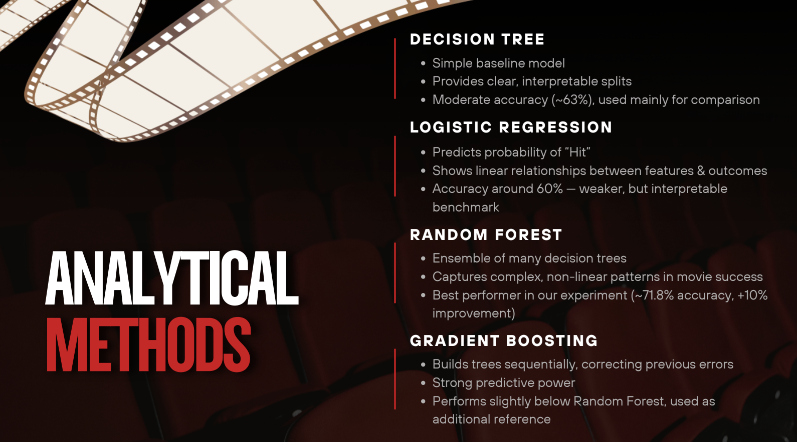
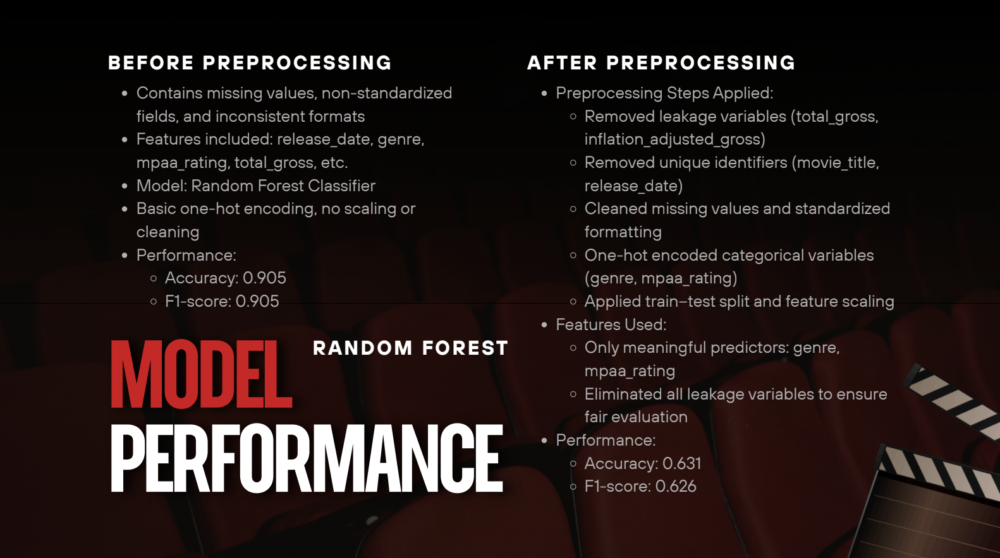
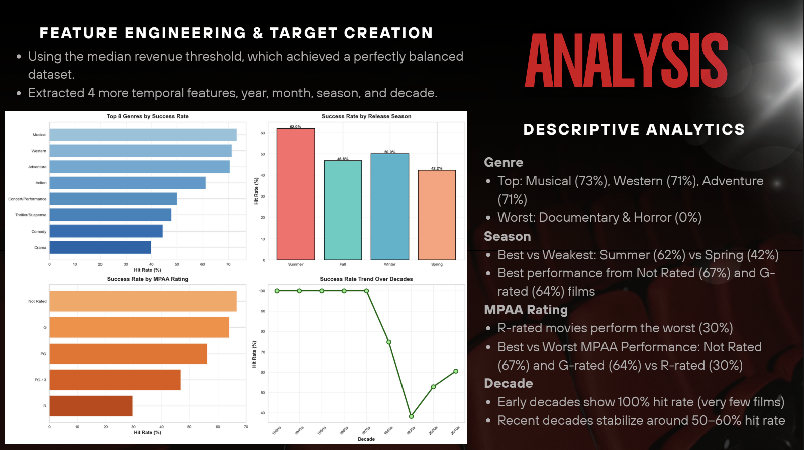
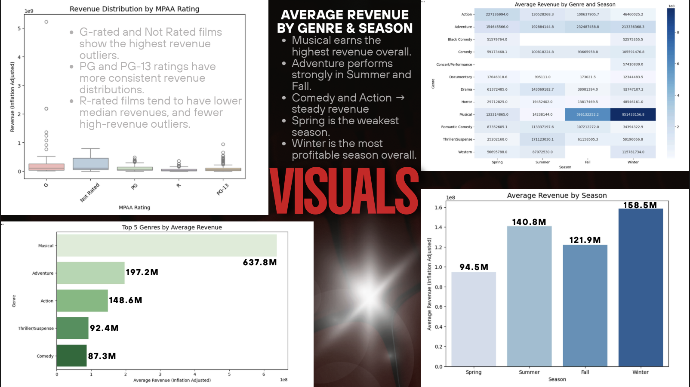
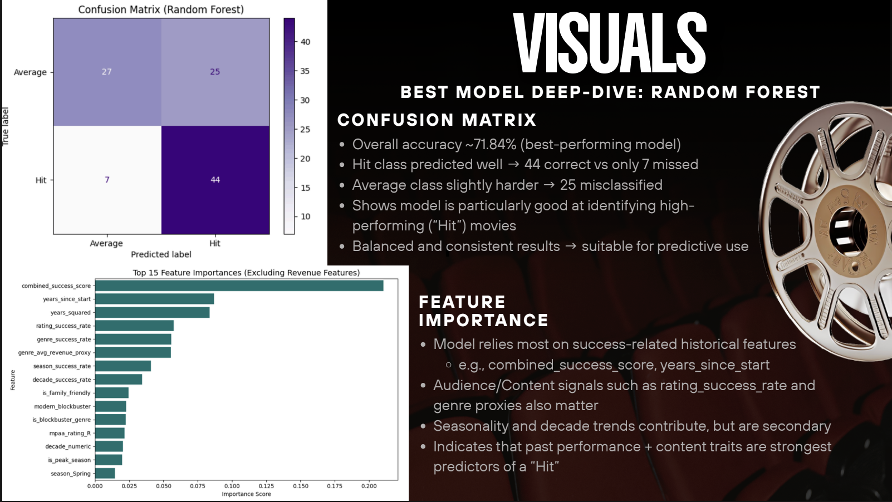
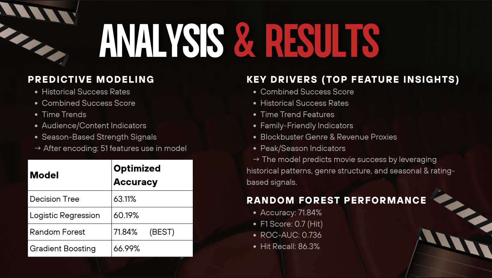
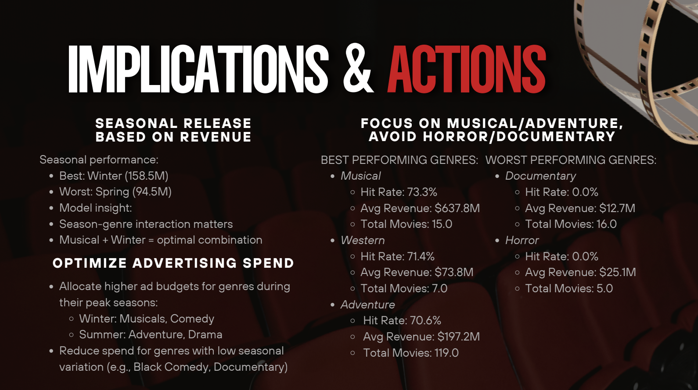

Predicting Disney Movie Box Office Success
A machine learning project that classifies Disney films as “Hit” or “Average” and uncovers what drives box office success.
Studios spend hundreds of millions of dollars without knowing which films will actually perform. We wanted to know whether a movie's box office success could be predicted before release, using only attributes known up front. Working with a Kaggle dataset of 573 Disney films, our team built a classifier that labels a film a “Hit” or “Average” performer and surfaces the factors that matter most.
Approach
We defined success by splitting films at the median inflation-adjusted gross, which produced a balanced target rather than a lopsided one. The first honest result came from a mistake worth keeping: an early model scored 90% accuracy, but only because the revenue columns secretly encoded the answer. After removing those leakage variables and the unique identifiers, we cleaned the missing values, engineered temporal features (year, season, decade, and historical success rates), and one-hot encoded the categorical fields into 51 model inputs.
From there we trained and tuned four classifiers and compared them on accuracy, F1, and ROC-AUC, with the goal of finding a model that was both reliable and explainable rather than just a single high number.
From the deck









What I learned
The biggest lesson was about data leakage. A model that looks excellent can be quietly cheating, and catching that early changed the whole project. Once we removed the leak, the honest Random Forest reached about 72% accuracy with a strong 86% recall on hits, and the feature importances told a clear story: a film's historical track record, genre, season, and rating carry real predictive signal, while raw revenue does not belong in the inputs at all.
We also learned where the model should stop. At 72% accuracy it is a useful screening tool, not a greenlight, and it cannot see the things that often decide a movie's fate: script, casting, direction, and word of mouth. The practical takeaway for a studio is to lean into Musical and Adventure titles, match release timing to each genre's strongest season, and treat the model as one input to a human decision rather than the decision itself.